Movelaria de Papelão
Construindo móveis artesanais e acessíveis
http://movelaria.github.io
Instagram @los.papelones
Quem somos nós?
E vocês, quem são?
Introdução
De onde vem essa ideia?
2015, NYC
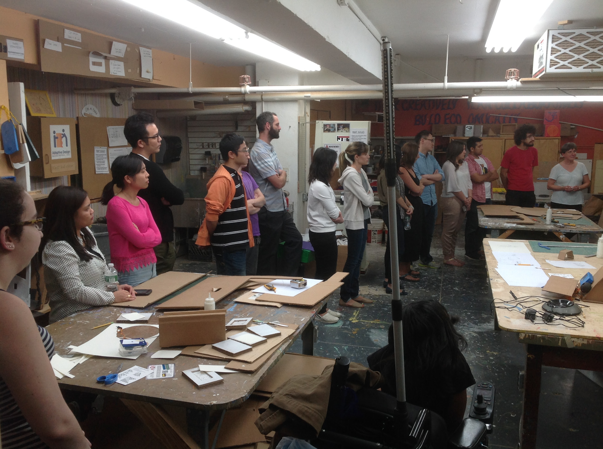2017, Sesc Vila Mariana
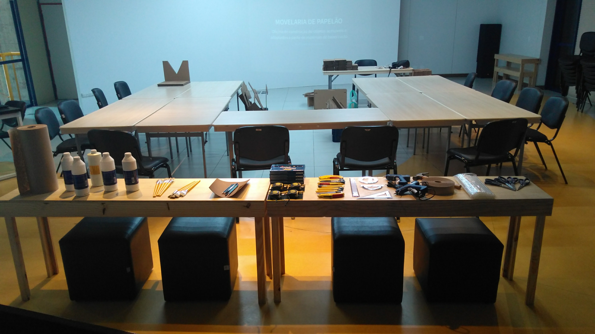2018, Sesc Pinheiros
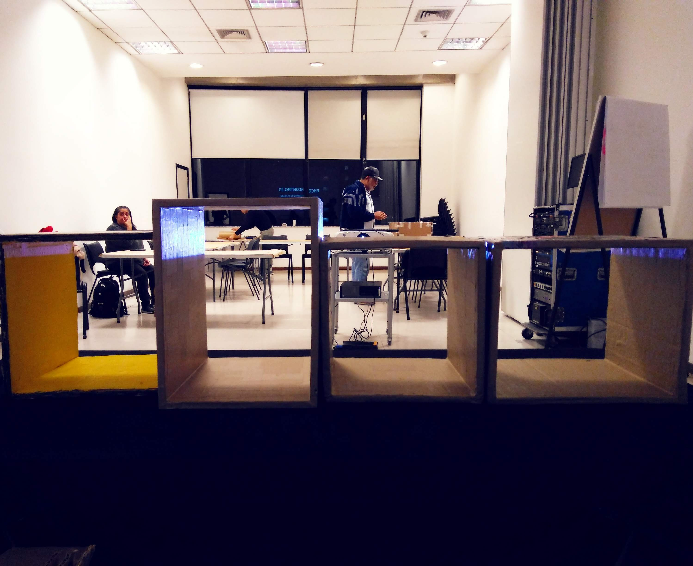2019, Sesc São Caetano
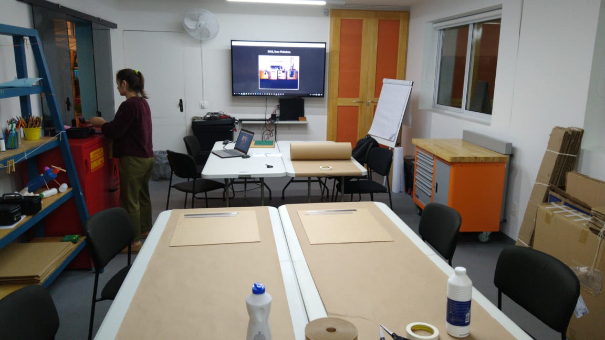Papelão
O que é possível fazer com ele?
Acessibilidade
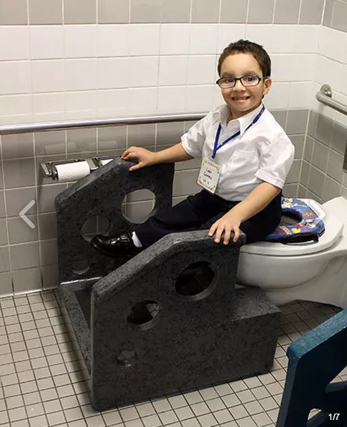
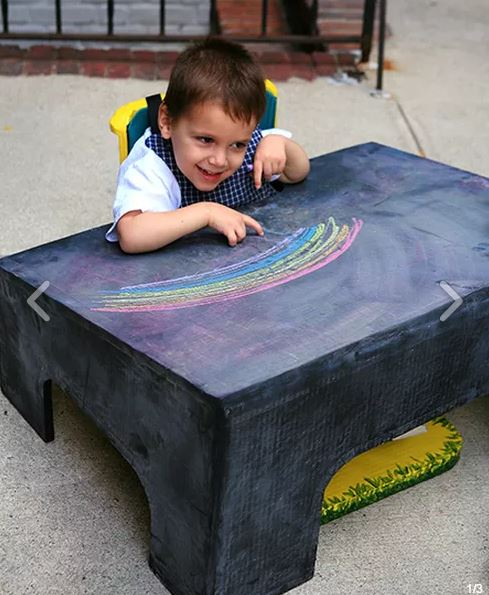
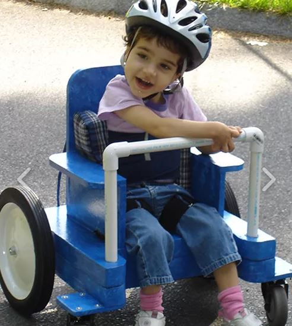
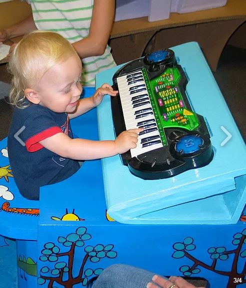
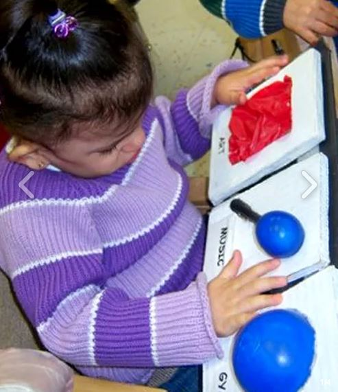

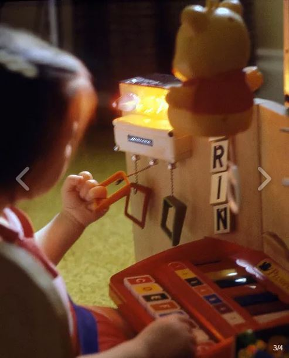
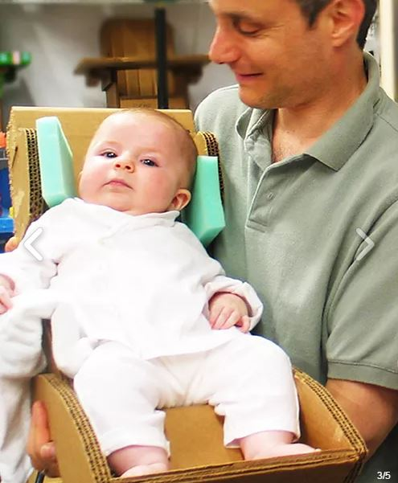
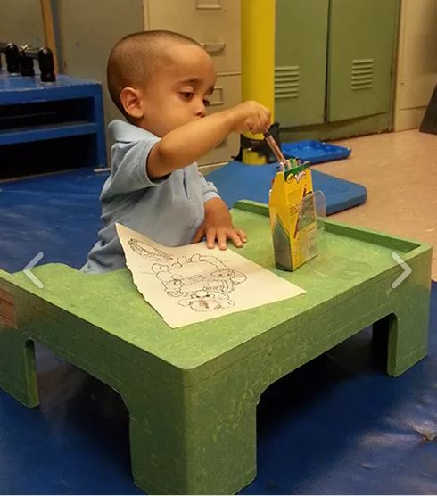
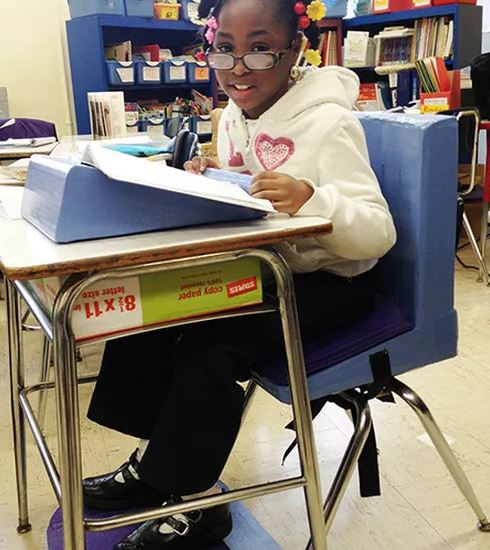
É possível ir muito além!

Conhecimento Aberto
Aprendendo como a ADA ensina.
Biblioteca de Videoaulas
Além dos cursos presenciais e pagos, a ADA disponibilizou uma série de vídeos para ensinar as técnicas básicas fabricação a partir do papelão.Técnicas
A Biblioteca de Videoaulas agrupa as técnicas necessárias nas 9 categorias seguintes:
| 1. Papelão | |
|---|---|
| 1.1. | A força e resistência da fibra do papelão |
| 1.2. | Camadas triplas usando cola branca |
| 1.3. | Camadas em direção única ou cruzada |
| 1.4. | Camadas triplas a partir de papelão caseiro |
| 2. Medição | |
|---|---|
| 2.1. | Medindo com uma régua em T |
| 2.2. | Medindo com uma fita métrica |
| 2.3. | Medindo com um transferidor |
| 3. Corte | |
|---|---|
| 3.1. | Cortando com estilete |
| 3.2. | Cortando com faca caseira |
| 3.3. | Cortando com serra tico-tico |
| 3.4. | Cortando com serra de fita |
| 4. Dobra | |
|---|---|
| 4.1. | Dobrando papelão de parede única |
| 4.2. | Dobrando papelão de parede tripla I |
| 4.2. | Dobrando papelão de parede tripla II |
| 5. Montagem | |
|---|---|
| 5.1. | Adicionando suporte interno |
| 5.2. | Removendo camadas de papelão |
| 5.3. | Montando com cola quente |
| 5.4. | Montando com cola quente e cola branca |
| 6. Reforço | |
|---|---|
| 6.1. | Criando pregos com palitos de churrasco |
| 6.2. | Criando pregos a partir de tiras de madeira |
| 6.3. | Adicionando pregos ao papelão |
| 6.4. | Adicionando palitos de churrasco ao papelão |
| 7. Aresta | |
|---|---|
| 7.1. | Rasgando papéis para arestas |
| 7.2. | Suavizando arestas com tiras de papel |
| 7.3. | Suavizando arestas com papel para embrulho |
| 7.4. | Suavizando arestas com fita adesiva |
| 8. Acabamento | |
|---|---|
| 8.1. | Fazendo o acabamento com lixas |
| 8.2. | Acabamento com massa de vidraceiro |
| 8.3. | Utilizando o martelo para suavizar arestas |
| 9. Decoração | |
|---|---|
| 9.1. | Preparando para pintura com primer |
| 9.2. | Pintando com tinta a base de água |
| 9.3. | Decorando com tinta a base de água |
| 9.4. | Finalizando com poliuretano a base de água |
Conversas
Para além da prática.
Sobre a escolha do papelão
- Podemos confiar em papelão para móveis?
- Há alguma ciência por trás disso tudo?
- Por que não a madeira, o compensado, etc?
Possibilidades e Limitações
- Móveis comerciais usam papelão?
- Para quais casos o papelão é indicado?
- O que é melhor não fabricar de papelão?
Encontrando matéria-prima
- Como e onde posso encontrar papelão?
- Quanto papelão é preciso conseguir?
- Como identificar os melhores materiais?
Comunidades de mão dupla
- Onde buscar apoio para a solução de problemas?
- Inspirando-se em projetos, experiências e saberes.
- Como devolver nosso conhecimento ao mundo?
7. Planejamento
O que faremos? Como?
Construcionismo
Construção do conhecimento baseada na realização de uma ação concreta que resulta em um produto palpável

Seymour Papert
Diretrizes
#1 Final Aberto
- Cada um produz o que quer.
- Suas produções dependem de suas ideias.
- Suas ideias dependem de referências.
#2 Instrutores
- Monitoria e direcionamento.
- Sugestões, auxílio com dúvidas.
- Pesquisa conjunta e parceria.
8. Movelaria
Manifesto da oficina
Somos a Movelaria, um coletivo recém-formado com o objetivo de construir mobiliários acessíveis.
Cada um de nós possui experiências em áreas de atuação diferentes. Nós nos complementamos.
Por isso, estamos aqui para experimentar, tentar, errar e acertar. Sobretudo, nosso objetivo é aprender.
Já conquistamos um horário comum, um laboratório e vários materiais para trabalharmos juntos.
Nosso desafio agora é transformar nossas ideias em objetos concretos, adaptáveis e universais.
Encontro #1
O bê-a-bá do papelão
Técnicas
Atividade #1
Construindo um nicho simples
Nicho de Papelão
em 15 stories do Instagram
Simbora?
antes de tudo, precauções:
Muito cuidado!
- Papelão é cortante!
- Estilete é cortante!
- Papéis são cortantes!
Encontro #2
Continuando com os nichos!
No último episódio
- Apresentações
- Introdução ao Papelão
- Direção das Fibras
- Medição e Corte
Hoje
- Finalização do Nicho!
- Novas Técnicas
- Novas referências
Encontro #3
Passamos da metade!
Mais uma vez,
parabéns a todos pelo empenho!
@los.papelones
Alguém tem algo a dizer?
Técnicas
O que tem para hoje?
Mesa? Banco? Nicho? Catedral?
Hora de ter ideias!
Inspirações
Contem com a gente!
Para planejar e por a mão na massa!
E aí?
Bora ter ideias e formar grupos?
Encontro #4
Todo fim é um novo começo!
Microfone Aberto
Alguém tem algo a dizer?
No último episódio...
Mandaram bem demais!
Estamos todos de parabéns.
Qual o destino dos móveis?
Vocês que mandam!
Técnicas
Simbora trabaiá?
O que fizermos, tá feito!
Obrigadão!
Instagram @los.papelones
Envie suas fotos para a gente!
gob.bueno@gmail.com
amanda.leti@gmail.com
vahh.oliveira@gmail.com